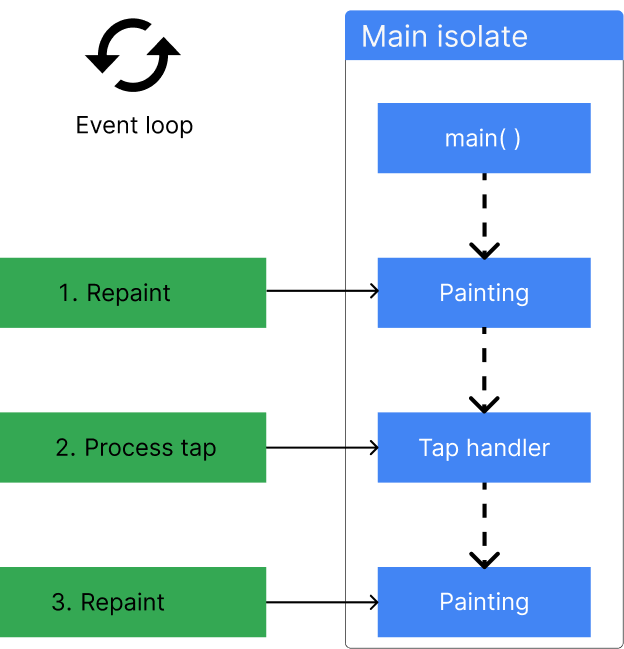

Concurrency in Dart
This page contains a conceptual overview of how concurrent programming works in Dart. It explains the event-loop, async language features, and isolates from a high-level. For more practical code examples of using concurrency in Dart, read the Asynchrony support page and Isolates page.
Concurrent programming in Dart refers to both asynchronous APIs, like Future and Stream, and isolates, which allow you to move processes to separate cores.
All Dart code runs in isolates, starting in the default main isolate, and optionally expanding to whatever subsequent isolates you explicitly create. When you spawn a new isolate, it has its own isolated memory, and its own event loop. The event loop is what makes asynchronous and concurrent programming possible in Dart.
Event Loop
#Dart’s runtime model is based on an event loop. The event loop is responsible for executing your program's code, collecting and processing events, and more.
As your application runs, all events are added to a queue, called the event queue. Events can be anything from requests to repaint the UI, to user taps and keystrokes, to I/O from the disk. Because your app can’t predict what order events will happen, the event loop processes events in the order they're queued, one at a time.
The way the event loop functions resembles this code:
while (eventQueue.waitForEvent()) {
eventQueue.processNextEvent();
}This example event loop is synchronous and runs on a single thread. However, most Dart applications need to do more than one thing at a time. For example, a client application might need to execute an HTTP request, while also listening for a user to tap a button. To handle this, Dart offers many async APIs, like Futures, Streams, and async-await. These APIs are built around this event loop.
For example, consider making a network request:
http.get('https://example.com').then((response) {
if (response.statusCode == 200) {
print('Success!');
}
}When this code reaches the event loop, it immediately calls the first clause, http.get, and returns a Future. It also tells the event loop to hold onto the callback in the then() clause until the HTTP request resolves. When that happens, it should execute that callback, passing the result of the request as an argument.

This same model is generally how the event loop handles all other asynchronous events in Dart, such as Stream objects.
Asynchronous programming
#This section summarizes the different types and syntaxes of asynchronous programming in Dart. If you're already familiar with Future, Stream, and async-await, then you can skip ahead to the isolates section.
Futures
#A Future represents the result of an asynchronous operation that will eventually complete with a value or an error.
In this sample code, the return type of Future<String> represents a promise to eventually provide a String value (or error).
Future<String> _readFileAsync(String filename) {
final file = File(filename);
// .readAsString() returns a Future.
// .then() registers a callback to be executed when `readAsString` resolves.
return file.readAsString().then((contents) {
return contents.trim();
});
}The async-await syntax
#The async and await keywords provide a declarative way to define asynchronous functions and use their results.
Here's an example of some synchronous code that blocks while waiting for file I/O:
const String filename = 'with_keys.json';
void main() {
// Read some data.
final fileData = _readFileSync();
final jsonData = jsonDecode(fileData);
// Use that data.
print('Number of JSON keys: ${jsonData.length}');
}
String _readFileSync() {
final file = File(filename);
final contents = file.readAsStringSync();
return contents.trim();
}Here's similar code, but with changes (highlighted) to make it asynchronous:
const String filename = 'with_keys.json';
void main() async {
// Read some data.
final fileData = await _readFileAsync();
final jsonData = jsonDecode(fileData);
// Use that data.
print('Number of JSON keys: ${jsonData.length}');
}
Future<String> _readFileAsync() async {
final file = File(filename);
final contents = await file.readAsString();
return contents.trim();
}The main() function uses the await keyword in front of _readFileAsync() to let other Dart code (such as event handlers) use the CPU while native code (file I/O) executes. Using await also has the effect of converting the Future<String> returned by _readFileAsync() into a String. As a result, the contents variable has the implicit type String.
As the following figure shows, the Dart code pauses while readAsString() executes non-Dart code, in either the Dart runtime or the operating system. Once readAsString() returns a value, Dart code execution resumes.

Streams
#Dart also supports asynchronous code in the form of streams. Streams provide values in the future and repeatedly over time. A promise to provide a series of int values over time has the type Stream<int>.
In the following example, the stream created with Stream.periodic repeatedly emits a new int value every second.
Stream<int> stream = Stream.periodic(const Duration(seconds: 1), (i) => i * i);await-for and yield
#Await-for is a type of for loop that executes each subsequent iteration of the loop as new values are provided. In other words, it’s used to “loop over” streams. In this example, a new value will be emitted from the function sumStream as new values are emitted from the stream that’s provided as an argument. The yield keyword is used rather than return in functions that return streams of values.
Stream<int> sumStream(Stream<int> stream) async* {
var sum = 0;
await for (final value in stream) {
yield sum += value;
}
}If you'd like to learn more about using async, await, Streams and Futures, check out the asynchronous programming tutorial.
Isolates
#Dart supports concurrency via isolates, in addition to asynchronous APIs. Most modern devices have multi-core CPUs. To take advantage of multiple cores, developers sometimes use shared-memory threads running concurrently. However, shared-state concurrency is error prone and can lead to complicated code.
Instead of threads, all Dart code runs inside isolates. Using isolates, your Dart code can perform multiple independent tasks at once, using additional processor cores if they're available. Isolates are like threads or processes, but each isolate has its own memory and a single thread running an event loop.
Each isolate has its own global fields, ensuring that none of the state in an isolate is accessible from any other isolate. Isolates can only communicate to each other via message passing. No shared state between isolates means concurrency complexities like mutexes or locks and data races won't occur in Dart. That said, isolates don't prevent race conditions all together. For more information on this concurrency model, read about the Actor model.
The main isolate
#In most cases, you don't need to think about isolates at all. Dart programs run in the main isolate by default. It’s the thread where a program starts to run and execute, as shown in the following figure:

Even single-isolate programs can execute smoothly. Before continuing to the next line of code, these apps use async-await to wait for asynchronous operations to complete. A well-behaved app starts quickly, getting to the event loop as soon as possible. The app then responds to each queued event promptly, using asynchronous operations as necessary.
The isolate life cycle
#As the following figure shows, every isolate starts by running some Dart code, such as the main() function. This Dart code might register some event listeners—to respond to user input or file I/O, for example. When the isolate's initial function returns, the isolate stays around if it needs to handle events. After handling the events, the isolate exits.

Event handling
#In a client app, the main isolate's event queue might contain repaint requests and notifications of tap and other UI events. For example, the following figure shows a repaint event, followed by a tap event, followed by two repaint events. The event loop takes events from the queue in first in, first out order.
Event handling happens on the main isolate after main() exits. In the following figure, after main() exits, the main isolate handles the first repaint event. After that, the main isolate handles the tap event, followed by a repaint event.
If a synchronous operation takes too much processing time, the app can become unresponsive. In the following figure, the tap-handling code takes too long, so subsequent events are handled too late. The app might appear to freeze, and any animation it performs might be jerky.

In client apps, the result of a too-lengthy synchronous operation is often janky (non-smooth) UI animation. Worse, the UI might become completely unresponsive.
Background workers
#If your app's UI becomes unresponsive due to a time-consuming computation—parsing a large JSON file, for example—consider offloading that computation to a worker isolate, often called a background worker. A common case, shown in the following figure, is spawning a simple worker isolate that performs a computation and then exits. The worker isolate returns its result in a message when it exits.

A worker isolate can perform I/O (reading and writing files, for example), set timers, and more. It has its own memory and doesn't share any state with the main isolate. The worker isolate can block without affecting other isolates.
Using isolates
#There are two ways to work with isolates in Dart, depending on the use-case:
- Use
Isolate.run()to perform a single computation on a separate thread. - Use
Isolate.spawn()to create an isolate that will handle multiple messages over time, or a background worker. For more information on working with long-lived isolates, read the Isolates page.
In most cases, Isolate.run is the recommended API to run processes in the background.
Isolate.run()
#The static Isolate.run() method requires one argument: a callback that will be run on the newly spawned isolate.
int slowFib(int n) => n <= 1 ? 1 : slowFib(n - 1) + slowFib(n - 2);
// Compute without blocking current isolate.
void fib40() async {
var result = await Isolate.run(() => slowFib(40));
print('Fib(40) = $result');
}Performance and isolate groups
#When an isolate calls Isolate.spawn(), the two isolates have the same executable code and are in the same isolate group. Isolate groups enable performance optimizations such as sharing code; a new isolate immediately runs the code owned by the isolate group. Also, Isolate.exit() works only when the isolates are in the same isolate group.
In some special cases, you might need to use Isolate.spawnUri(), which sets up the new isolate with a copy of the code that's at the specified URI. However, spawnUri() is much slower than spawn(), and the new isolate isn't in its spawner's isolate group. Another performance consequence is that message passing is slower when isolates are in different groups.
Limitations of isolates
#Isolates aren't threads
#If you’re coming to Dart from a language with multithreading, it’d be reasonable to expect isolates to behave like threads, but that isn’t the case. Each isolate has its own state, ensuring that none of the state in an isolate is accessible from any other isolate. Therefore, isolates are limited by their access to their own memory.
For example, if you have an application with a global mutable variable, that variable will be a separate variable in your spawned isolate. If you mutate that variable in the spawned isolate, it will remain untouched in the main isolate. This is how isolates are meant to function, and it's important to keep in mind when you’re considering using isolates.
Message types
#Messages sent via SendPort can be almost any type of Dart object, but there are a few exceptions:
- Objects with native resources, such as
Socket. ReceivePortDynamicLibraryFinalizableFinalizerNativeFinalizerPointerUserTag- Instances of classes that are marked with
@pragma('vm:isolate-unsendable')
Apart from those exceptions, any object can be sent. Check out the SendPort.send documentation for more information.
Note that Isolate.spawn() and Isolate.exit() abstract over SendPort objects, so they're subject to the same limitations.
Synchronous blocking communication between isolates
#There is a limit to the number of isolates that can run in parallel. This limit doesn't affect the standard asynchronous communication between isolates via messages in Dart. You can have hundreds of isolates running concurrently and making progress. The isolates are scheduled on the CPU in round-robin fashion, and yield to each other often.
Isolates can only communicate synchronously outside of pure Dart, using C code via FFI to do so. Attempting synchronous communication between isolates by synchronous blocking in FFI calls may result in deadlock if the number of isolates is over the limit, unless special care is taken. The limit is not hardcoded to a particular number, it's calculated based on the Dart VM heap size available to the Dart application.
To avoid this situation, the C code performing synchronous blocking needs to leave the current isolate before performing the blocking operation and re-enter it before returning to Dart from the FFI call. Read about Dart_EnterIsolate and Dart_ExitIsolate to learn more.
Concurrency on the web
#All Dart apps can use async-await, Future, and Stream for non-blocking, interleaved computations. The Dart web platform, however, does not support isolates. Dart web apps can use web workers to run scripts in background threads similar to isolates. Web workers' functionality and capabilities differ somewhat from isolates, though.
For instance, when web workers send data between threads, they copy the data back and forth. Data copying can be very slow, though, especially for large messages. Isolates do the same, but also provide APIs that can more efficiently transfer the memory that holds the message instead.
Creating web workers and isolates also differs. You can only create web workers by declaring a separate program entrypoint and compiling it separately. Starting a web worker is similar to using Isolate.spawnUri to start an isolate. You can also start an isolate with Isolate.spawn, which requires fewer resources because it reuses some of the same code and data as the spawning isolate. Web workers don't have an equivalent API.
Additional resources
#- If you’re using many isolates, consider the
IsolateNameServerin Flutter, orpackage:isolate_name_serverthat provides similar functionality for non-Flutter Dart applications. - Read more about Actor model, which Dart's isolates are based on.
- Additional documentation on
IsolateAPIs:
Unless stated otherwise, the documentation on this site reflects Dart 3.6.0. Page last updated on 2024-11-17. View source or report an issue.